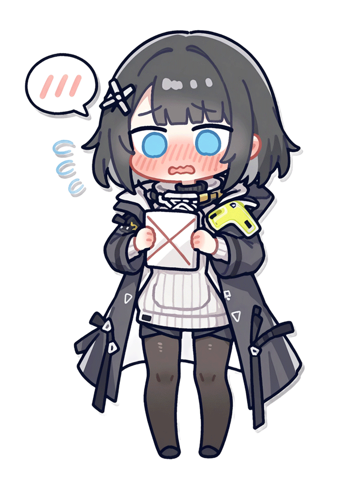

🐾「Webpage Pet」
Add the Webpage Pet to your own web page! Support custom images, auto resizing and more runtime params!
把网页宠物添加到你自己的网页内！支持自定义图片、自动缩放和更多运行参数！

Add the Webpage Pet to your own web page! Support custom images, auto resizing and more runtime params!
把网页宠物添加到你自己的网页内！支持自定义图片、自动缩放和更多运行参数！
